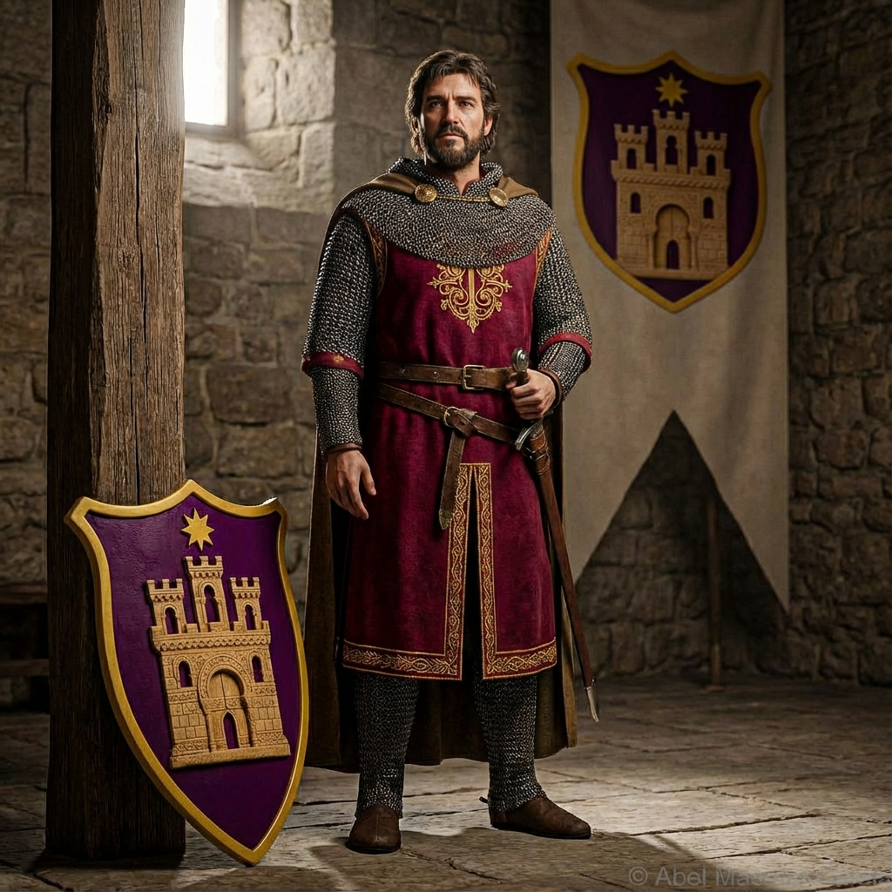
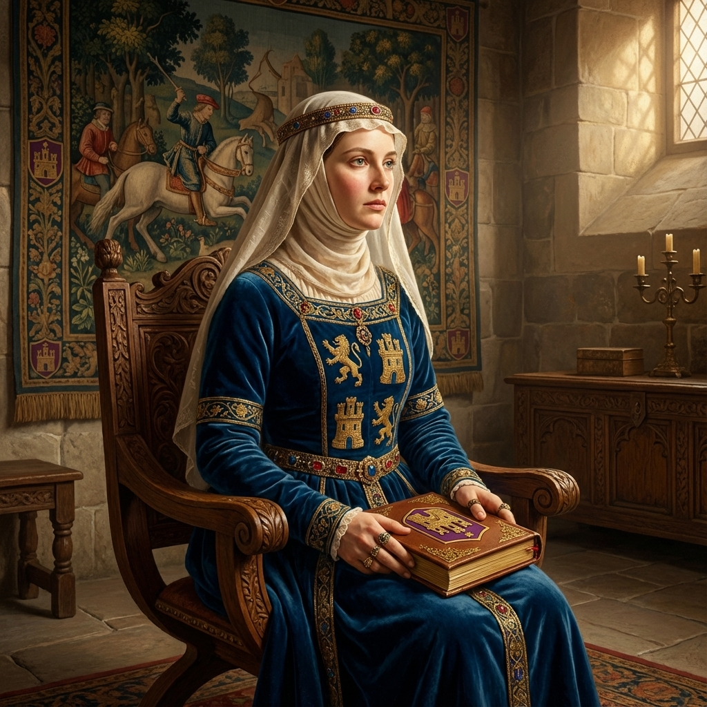
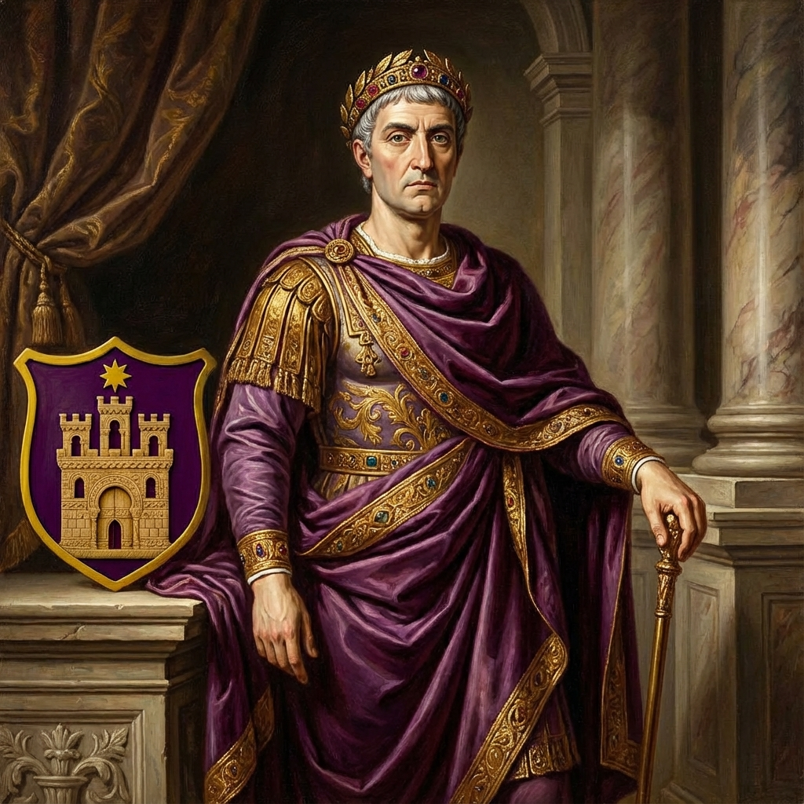
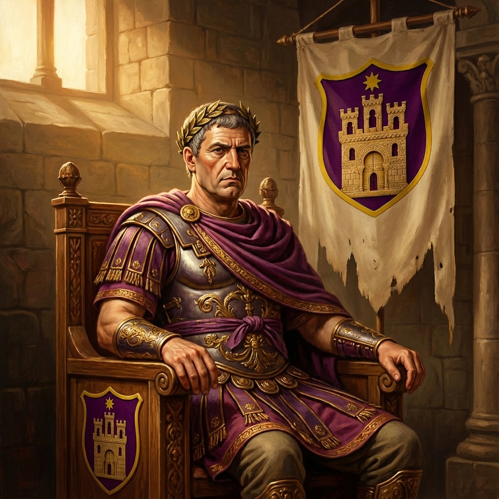

Condes de Castilla, Álava y Lantarón

Gonzalo Téllez
Conde de Lantarón y Cerezo. Unificador de territorios y figura clave en nuestra historia.
Ver Biografía




Emperadores Romanos e Hispanos



Militares y Gobernantes


Santos y Mártires
Órdenes y Legados